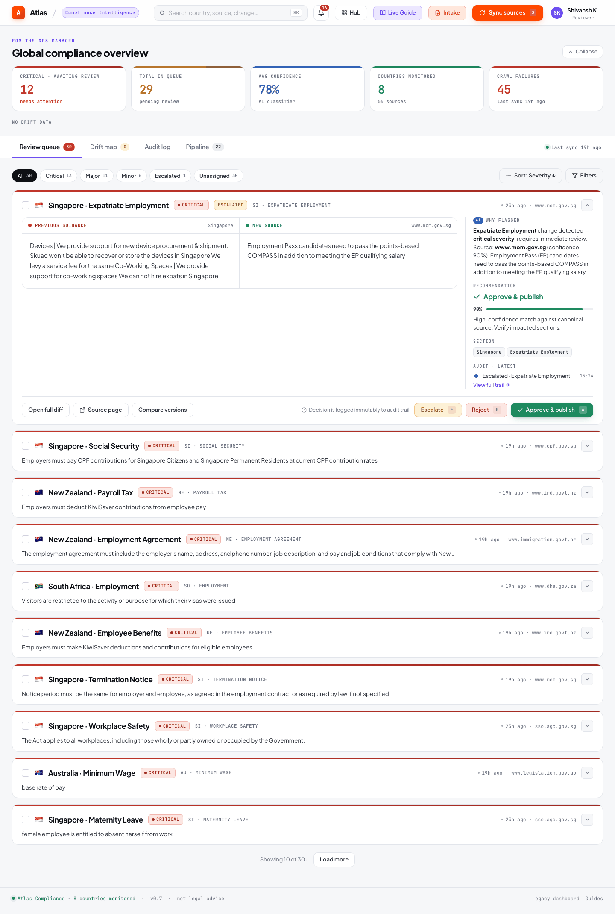
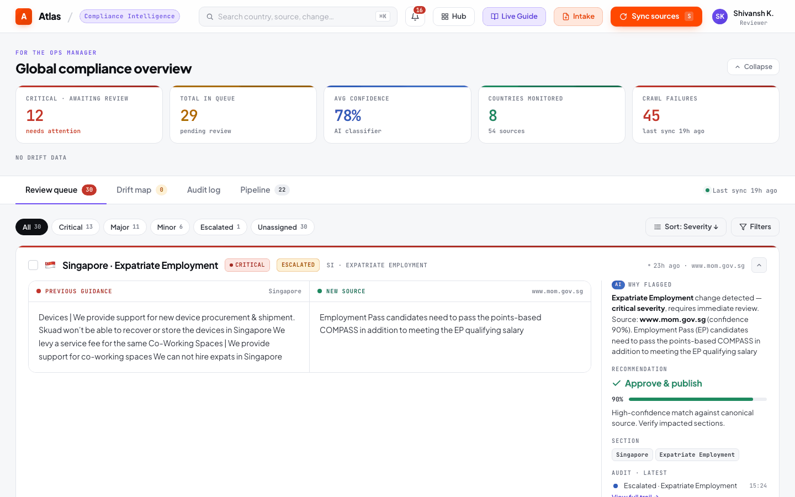
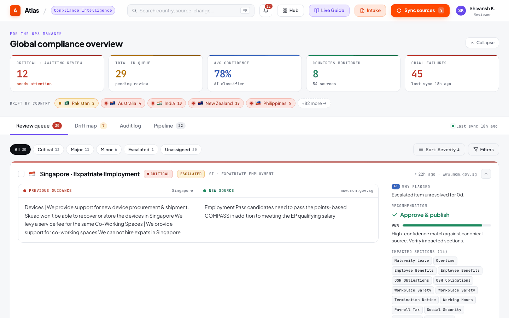
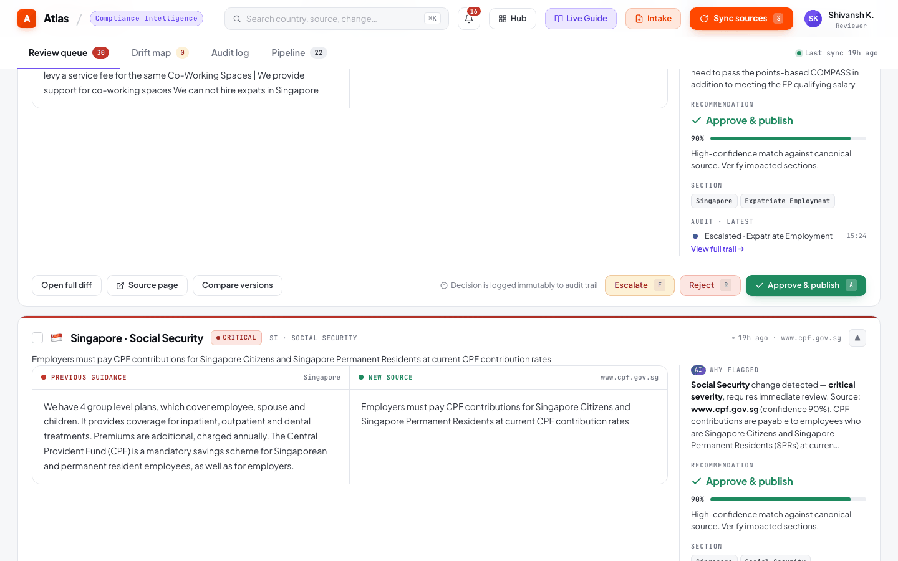
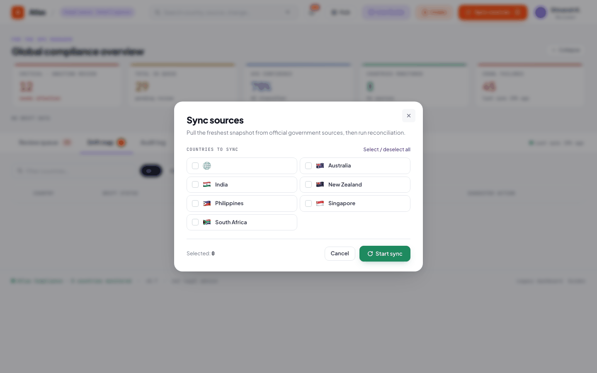
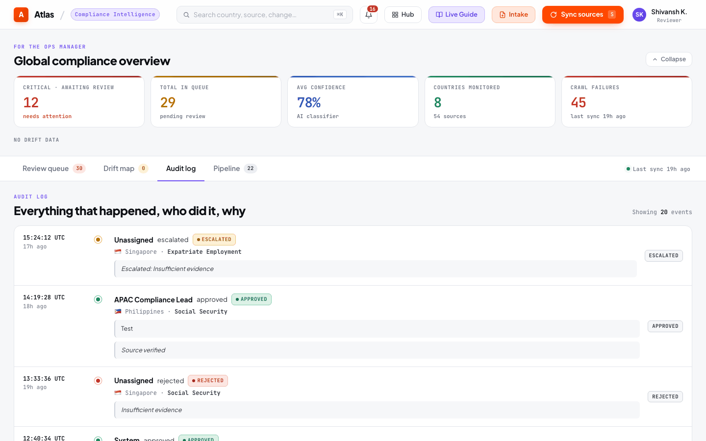
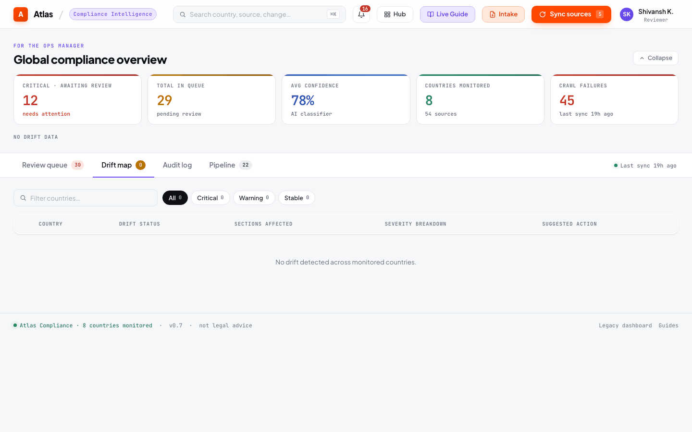
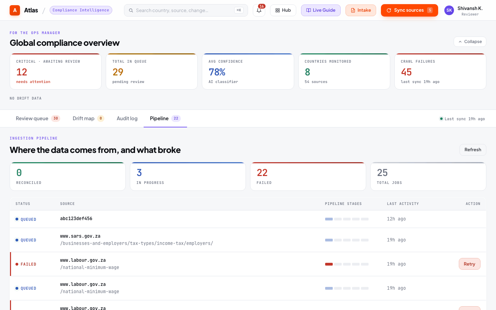

Ops Dashboard¶
The ops dashboard (/ops) is the primary interface for compliance operations — monitoring pipeline health, reviewing changes, and managing the compliance posture.

Metrics Cards¶

The top row displays real-time KPIs pulled from GET /api/metrics:
| Metric | Source | What It Tells You |
|---|---|---|
| Monitored Sources | Active source endpoints count | Total official government sources being tracked |
| Pending Reviews | review_queue WHERE status='pending' |
Changes awaiting reviewer decision |
| Critical Changes | review_queue WHERE severity='critical' AND status='pending' |
High-materiality changes requiring urgent attention |
| Approved Today | review_queue WHERE status='approved' AND reviewed_at >= today |
Review throughput for the current session |
| Countries Active | DISTINCT country FROM country_guide |
Countries with at least one published rule |
| Drift Alerts | DriftDetector.detect_all() count |
Countries with detected compliance drift |
| Last Sync | Most recent ingestion job timestamp | When the pipeline last ran |
Review Queue¶

The review queue shows all pending changes with:
Priority Ordering¶
Items are sorted by: 1. Status: Escalated items first, then pending 2. Severity: Critical → major → minor 3. Confidence: Highest confidence first
Per-Item Display¶

- Severity badge: Color-coded (red = critical, orange = major, blue = minor)
- Materiality chip: CRITICAL / HIGH / MODERATE / LOW / INFORMATIONAL
- Change type: NUMERIC_THRESHOLD_CHANGE, ELIGIBILITY_CHANGE, REQUIREMENT_ADDED, etc.
- Before/after diff: Word-level semantic highlighting
- Source paragraph: Relevant excerpt from the official government source
- Confidence score: LLM extraction confidence (0–100%)
- Source URL: Link to the original government page
Actions¶

| Action | Button | Effect |
|---|---|---|
| Approve | Green "Approve & publish" | Publishes change, creates version + provenance + audit entry |
| Reject | Red "Reject" | Dismisses change, creates audit entry |
| Escalate | Yellow "Escalate" | Routes to senior reviewer, surfaces first in queue |
| Bulk Approve | Country-scoped button | Approves all non-critical pending items for a country |
Filters¶
- Country: Filter by specific country
- Severity: critical / major / minor
- Status: pending / escalated / approved / rejected
- Materiality: CRITICAL / HIGH / MODERATE / LOW / INFORMATIONAL
Sync Controls¶

Click Sync Now to trigger a manual pipeline run. A modal allows selecting specific countries to sync, conserving Groq API quota for targeted checks.
After sync completes, the metrics cards refresh and any detected changes appear in the review queue.
Audit Log Tab¶

The audit log tab displays an immutable record of every review decision:
| Column | Content |
|---|---|
| Timestamp | When the decision was made |
| Country / Section | Which rule was affected |
| Decision | Approved / Rejected / Escalated |
| Reviewer | Who made the decision |
| Rationale | Why the decision was made |
| Old Value | Previous rule text |
| New Value | Updated rule text (for approvals) |
Filterable by country and date range via GET /api/audit?country=India&since=2025-01-01.
Drift Reports¶

The drift tab shows compliance drift reports per country:
- Overall severity: CRITICAL / WARNING / INFO / NONE
- Affected sections: Which rules have detected drift
- Evidence: Explanation of why drift was detected (e.g., "Critical item pending for 18 days")
- Recommended action: What the compliance team should do
Pipeline Health¶

The pipeline tab shows recent ingestion jobs with:
- State: queued → fetched → extracted → reconciled (or failed)
- Timestamps: Per-stage timing for latency analysis
- Failure reasons: When a source fails, the error is recorded and displayed